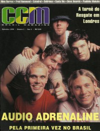

CMnexus
: Contemporary Christian culture, music, and media.
|
|
CCM Brasil, Sep 1998, vol. 1, iss. 1
| Cover |
|---|
|  | | Writers in this Issue |
|---|
Arneson, Erik
Brown, Bruce A.
Carlozo, Lou
De Marco, John M
Ely, Gordon
Fischer, John
Gouêva, Karina
Hefner, April
Hendrickson, Lucas W.
Nappa, Mike
Nentwig, Wendy Lee
Newcomb, Brian Quincy
Parker, Mike
Rabey, Steve
Randolph-Pitman, Karly
Riddle, Melissa
Urbanski, Dave
|
Cover Feature:
- "Some Kind of Journey chega ao Brasil" by Brian Quincy Newcomb
Article:
- "Un fenômeno chamado Catedral" by Karina Gouêva
- "Saindo de um coma" by Brian Quincy Newcomb
- "Aonde o Búfalo Vagueia" by Dave Urbanski
- "Os Beatles brasileiros da música gospel" by Karina Gouêva
- "Cruzando o Oceano" by Melissa Riddle
- "Canta Rio Invade Reduto Carnavalesco" by Karina Gouêva
- "O Próximo Capítulo" by Lou Carlozo
- "A Revolucão de Paulinho Makuko" by Karina Gouêva
- "CD de Aline Barros traz faixa multimídia" by Karina Gouêva
Grupos de Talento:
- "Sujos e Feios" by Mike Nappa
- "com Simplicidade" by Karly Randolph-Pitman
- "Sem Cicatrizes" by Erik Arneson
O que Rola:
- "Encantos do Dove" by Dave Urbanski
Dove Awards 1998
O que há de novo:O que há de novo Brasil:bastidores:
- "Monroe Jones Chega à Satisfação" by Lucas W. Hendrickson
pense nisso:
- "What Would Jesus Do? (O Que Jesus Faria?)" by John Fischer
This is the first issue of CCM Brasil. Relevant LinksYou may be able to find CCM Brasil in a library near you: check Worldcat |
|